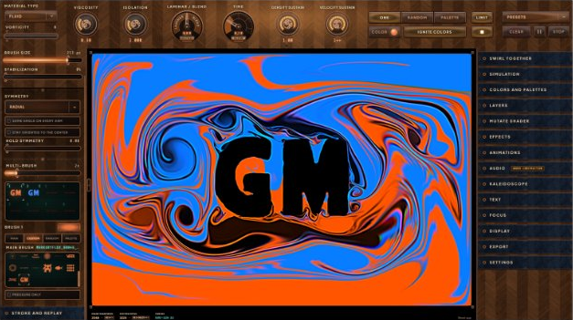
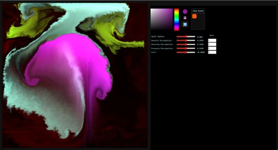
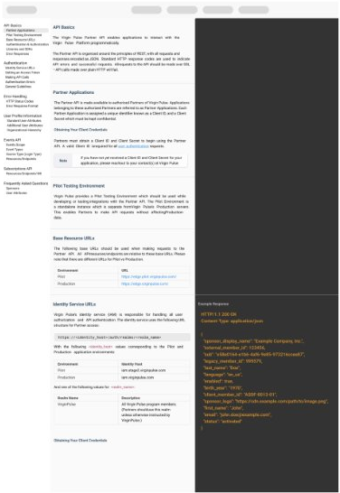
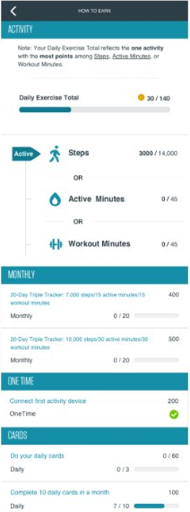
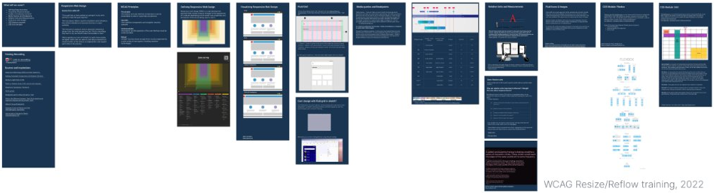
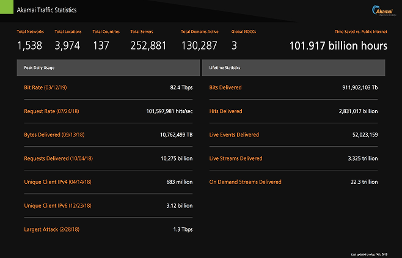
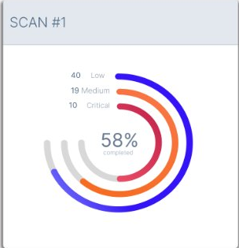
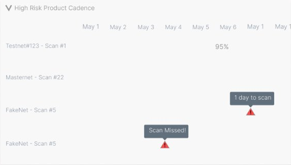
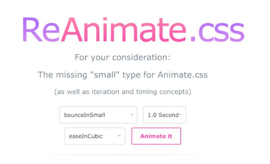
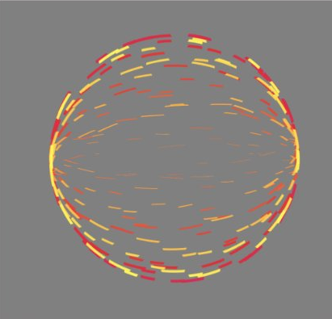

Swirl Together
- Date
- 2022–2026
- Field
- Own product
- Role
- Designer and engineer, end to end
I took a fluid-sim CodePen to Steam Next Fest as a painting app built for art therapy.
It started as a fork of Pavel Dobryakov's WebGL fluid simulation. Testing with art therapists showed where the information architecture fell short, so I reshaped inputs to prevent errors, rewrote labels to read at a glance, and made presets glide every slider into place.
- Calm multiplayer painting for up to 8 people, in the browser and on desktop
- Every control works from the keyboard, with a skip link, visible focus, and a name a screen reader can announce
- A simple layout for beginners; the full parameter system for power users
- Shown in Steam Next Fest, October 2026


Quickbase Pipelines
- Date
- 2023
- Field
- No-code automation
- Role
- Sr. Interaction Designer (contract)
I prototyped Quickbase's new automation builder as a live node canvas, and 95% of beta users liked it.
Pipelines lets Quickbase customers connect their data to other services and automate the work in between. The existing builder was hard to read and hard to learn. I prototyped a node-based interaction model in LiteGraph, so stakeholders and testers could drag, connect, and rearrange real steps and react to how it actually felt to use.
- Led wireframing and interactive prototyping for the new builder
- Ran workshops with SMEs, engineers, and UX researchers to set the technical scope
- 95% positive feedback from users in the private beta
Virgin Pulse
- Date
- 2021–2023
- Field
- Enterprise wellness
- Role
- UX Design Engineer, leading accessibility strategy
I taught 400 engineers, designers and PMs to build pages that hold up at 400% zoom.
A Bank of America contract required Section 508 compliance and the effort had stalled. I built the shared standards, then taught both sides how to use them.
- 400+ engineers, designers, and PMs trained across two curricula
- Resize and Reflow approach adopted as the engineering SOP for 300+ engineers
- Annotation library for writing a11y acceptance criteria engineers could build without guessing
- Also designed for the rewards, pattern library, and partner API teams



Akamai
- Date
- 2019
- Field
- Infosec, federal cloud
- Role
- Sr. UI/UX Developer and Designer, embedded with the infosec team
I pulled a FedRAMP scanning workflow out of five different systems and into one tool.
Product owners had to keep up a strict scanning cadence, but the data lived in scanners, internal APIs, calendars, spreadsheets, and NIST.gov. I mapped that workflow and pulled it into one tool.
- Task analysis and contextual inquiry with 8 people from compliance, engineering, and management
- Remote and in-person card sorts shaped the information architecture
- Three rounds of prototypes, built in Rails so the team could use them



Experiments
- Date
- 2014–2015
- Field
- Open source
- Role
- Author
Two small open-source projects from 2015, made to learn how the browser draws a frame.
ReAnimate.css added the missing "small" animation type to Animate.css, plus iteration and timing controls. Art@60fps pushed HAML and SCSS loops to see how far pure CSS could go.


Have a project, or a role to fill?
I take on accessibility audits and remediation plans, VPAT/ACR prep, accessible component and design-system work, and interactive prototypes. Based near Boston.